SOBRE MÍ

Biografía
María Alejandra Pineda es una joven artista, muralista y tatuadora de 26 años, originaria del departamento de León, se trasladó a la ciudad de Estelí por 4 años donde fomento sus conocimientos, técnicas y pasión por el arte. Desde muy pequeña supo que le gustaba el arte lo normal para una niña dibujar, colorear y pintar. En su adolescencia la mayor inspiración en ese momento para decidir dedicarse al arte fue ver a un colectivo de arte que estaba haciendo una exposición en León y desde ese punto ella puedo ver que si se podía vivir del arte y que era una profesión, tomo la decisión de mudarse a Estelí y dedicarse a tiempo completo al arte.
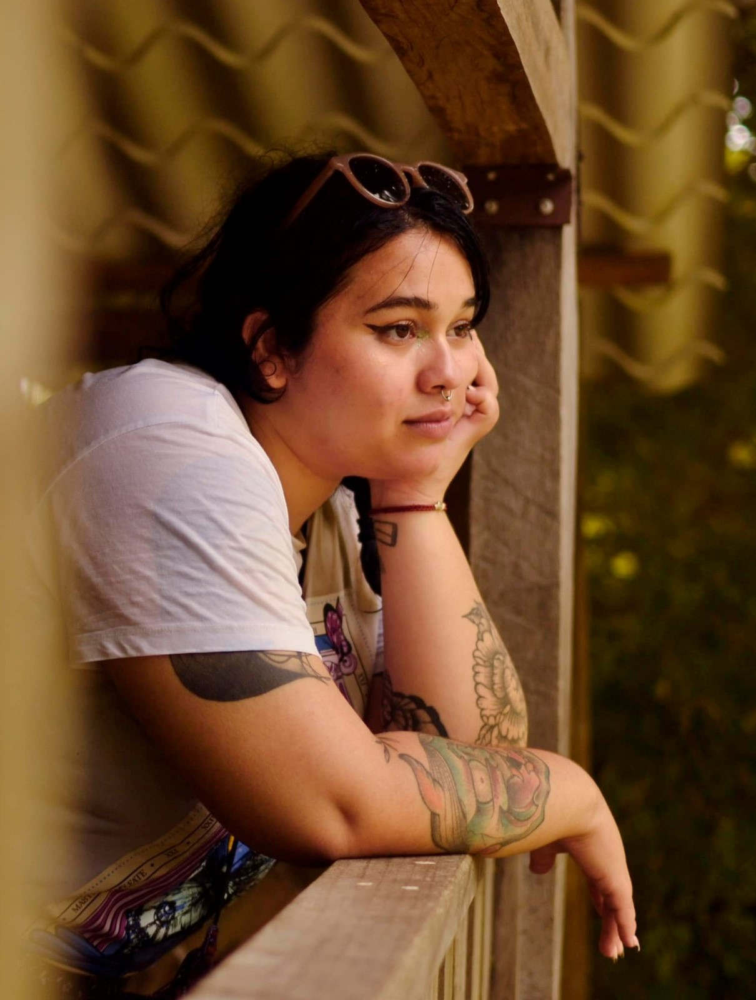
Aun no tiene una especialidad o un arte único definido, pero ella se a destacado mucho por murales, retratos y obras propias inspiradas en surrealismo, realismo y con una mezcla de abstracto. Muchas de sus obras son escenas cotidianas con una composición llamativa puesto que está, hecha desde el punto de vista de la artista.
Sus obras principales
Murales, a través de estos se puede hacer una conexión más cercana con las personas. De sus primeros murales, cerca del estadio de fútbol en Esteli, fue realizado con el motivo de visibilizar y hablar de mujeres empoderadas. Juntas somos poderosas, mural en la ciudad de Estelí, frente de Cruz Roja es un mural donde se plasma el empoderamiento y fuerza femenina. Mural que fue ganador a nivel Centroamericano en una convocatoria de mujeres artistas de Guatemala. Mural de Julio Cumbio, en la ciudad de Estelí. Se realizó con el sentir de poder representar a alguien popular del pueblo.

 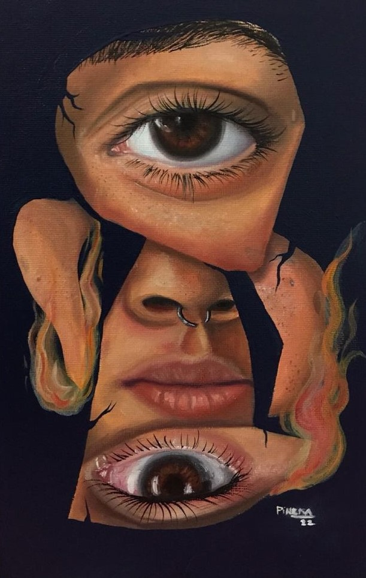
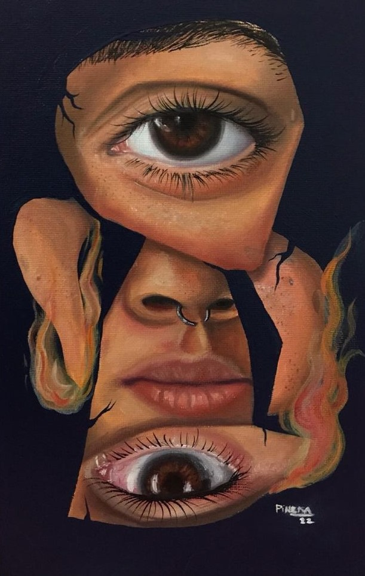

 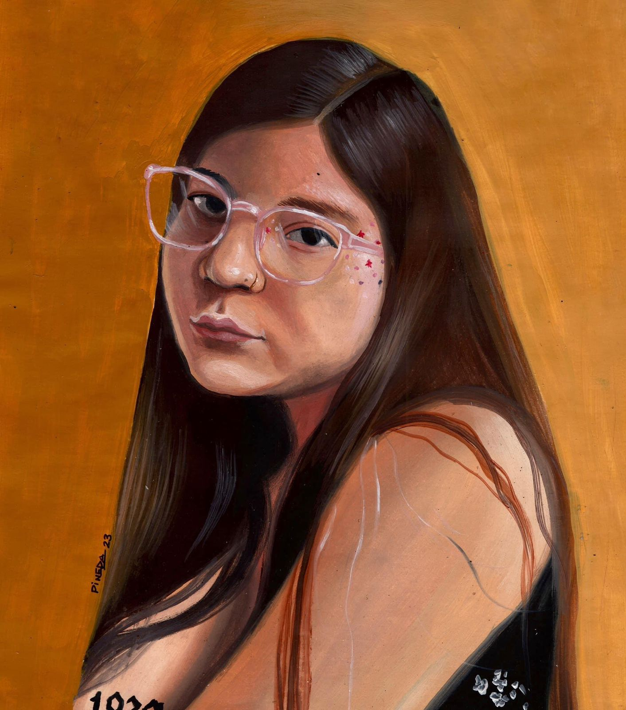
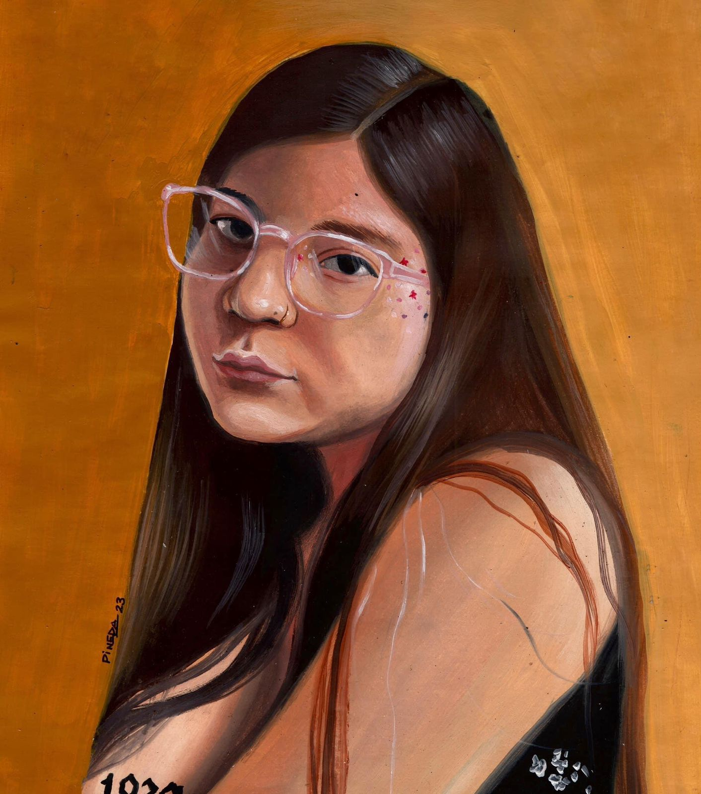
 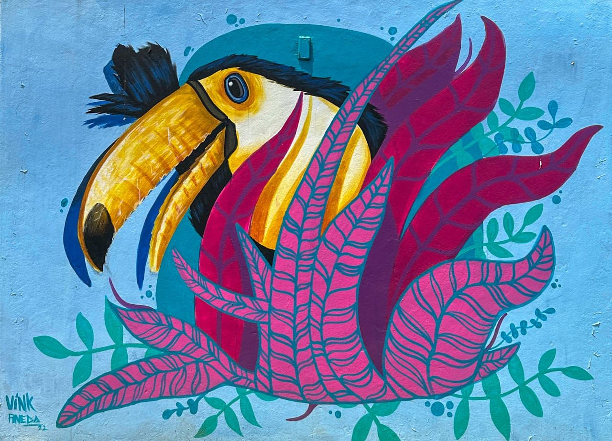
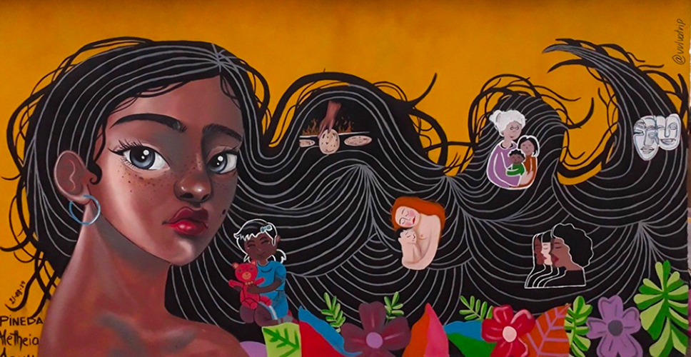
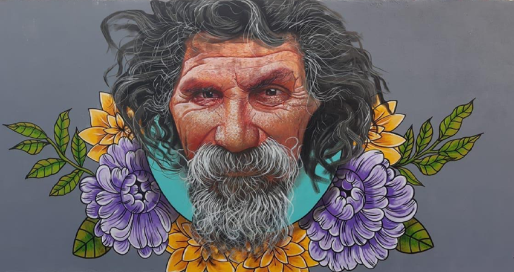
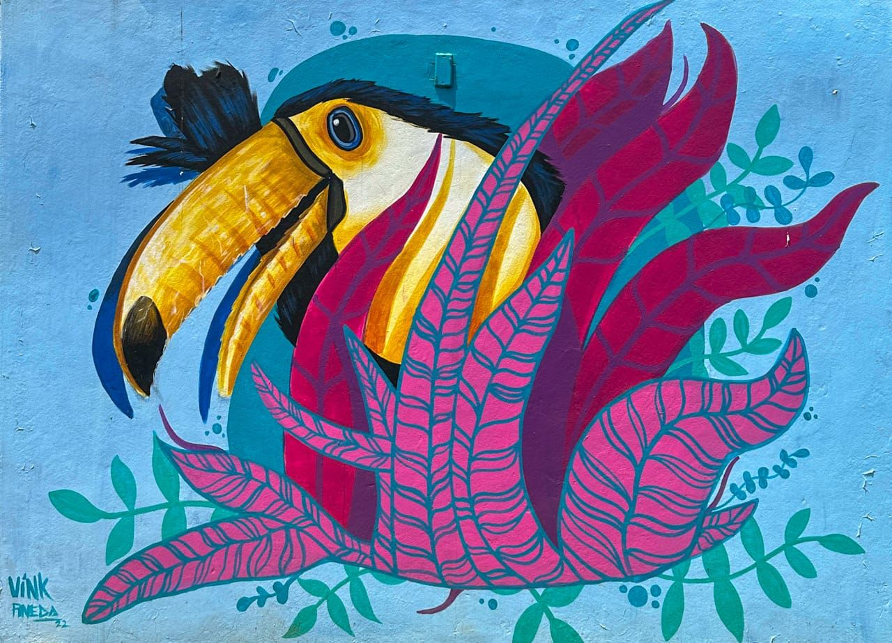
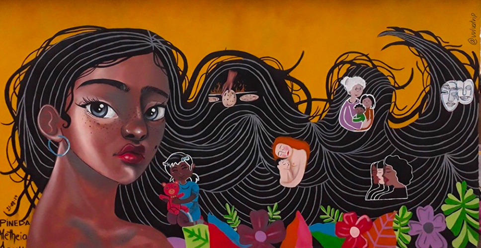
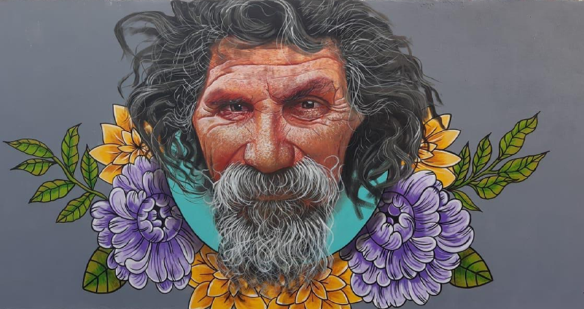